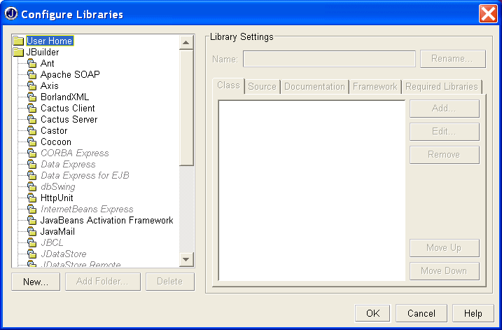
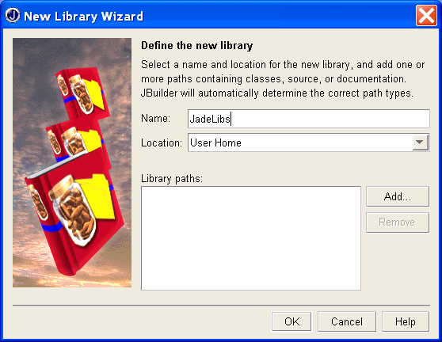
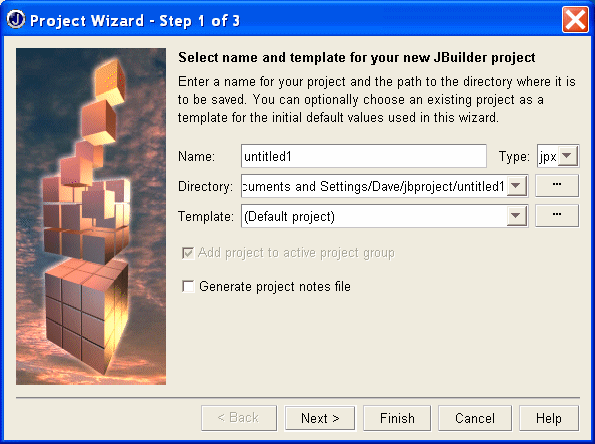
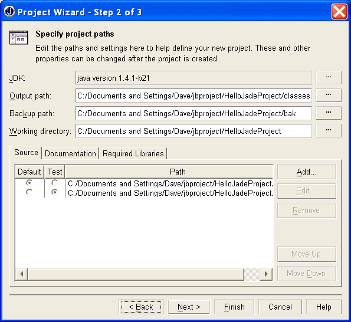
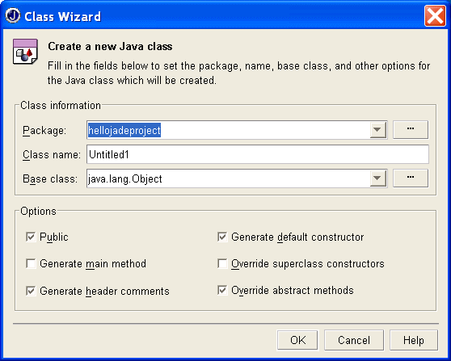
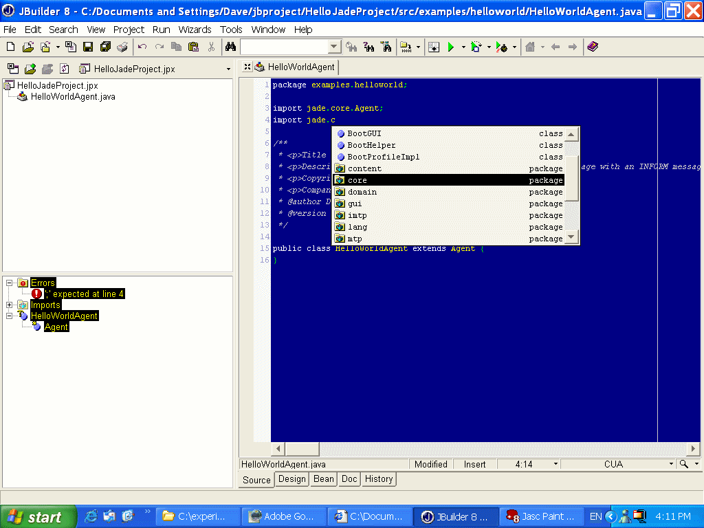
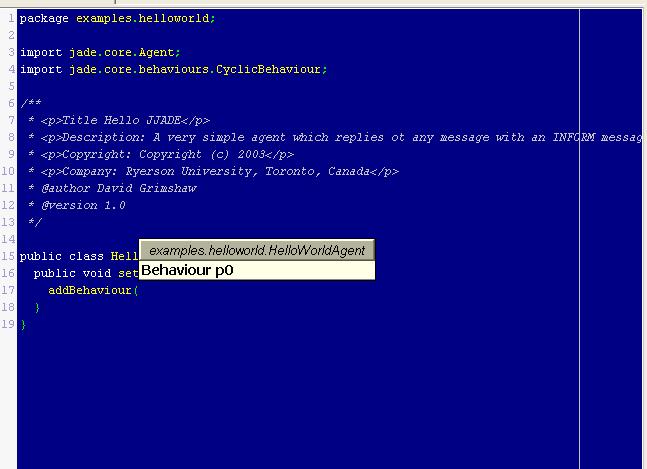
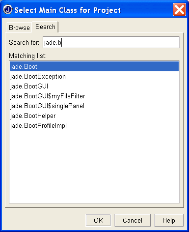
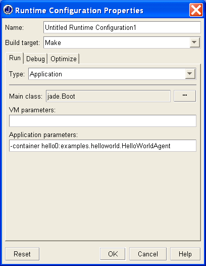
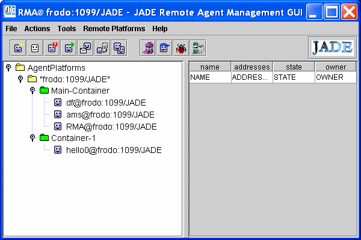

[Note: This tutorial is quite detailed and assumes very no knowledge of JBuilder and only a little of JADE. If you find such verbose tutorials boring, or you just want a quick review, click Fast Forward for a summary exposition.]
I have programmed JADE using a ordinary text editor (TextPad on Windows 2000) and running JADE from the console. I have, however, eyed those fancy Java IDEs from Borland (JBuilder), Sun (Forte for Java), and IBM (Visual Agen for Java). The incentive has usually been the need for an agent with a GUI. Programming swing things such as GridBagLayouts can be tedious. These IDEs let you draw the UI and then they generate the code to implement the properties of the components you have drawn. Much more fun!
So, one way to take advantage of these (free!) IDEs with JADE is to simply use them to draw GUIs and then use the code with other code (non-graphic) code written with your trusty text editor. For this purpose I believe JBuilder is the best choice as it seems to generate the cleanest code, putting all the generated code in clearly defined places, which makes it easy to read and understand (and maybe modify).
But, wouldn't it be nice to take advantage of many other convenient features provided by these IDEs when developing the whole of your agent system, not just the GUI parts. This is indeed possible. This tutorial shows one way to do it using JBuilder.
You can obtain the free JBuilder Personal from, http://www.borland.com/jbuilder/personal/index.html. For Windows it comes in a 59MB zip file. For UNIX systems (various) it comes in a 71MB .tar.gz file. It also comes in 5 human language versions. On MS Windows you unzip it into a temp folder and then run the install program. JBuilder comes with its own JRE.
To run JBuilder you must install a file containing a key in your home directory. This is emailed to you when you register with Borland. I comes with documentation telling you what JBuilder considers to be your home directory on the various operating systems.
The JADE main libraries are jade.jar, jadeTools.jar, iiop.jar, and commons-codec-1.3.jar. You may also want to include some add-ons such as http.jar (and crimson.jar). To allow JBuilder to access these, do the following: (This step only needs to be done once.)
Click Tools->Configure Libraries. This window pops up:

Select User Home and click the New button. Another window pops up:

Fill a name, e.g., JadeLib but leave the location alone. Click the Add button and navigate to, and select, the jade.jar file on your system. Click OK in the file window. Repeat the process for jadeTools.jar, iiop.jar, commons-codec-1.3.jar, and any JADE add-ons you like. (These can be added any time later.) When the libraries have been added you get this:
Click OK. And on the previous window, also click OK. Now JBuilder knows about JADE. However, you still have to tell your projects about JADE.
Of course you can look at this by pointing your browser at, for example, c:\jade\docs\api\index.html. But you can also, if you wish, integrate the API docs into JBuilder.
Go to Tools->Config Libraries and choose the Documentation tab. Click the Add button and navigate to the directory c:\jade\docs\api (or the equivalent on your system. Click the OK button (on each window). JBuilder should now be able to see the JADE API docs.
In the JBuilder editor you should be able to access the documentation of a JADE class by placing the cursor inside the class (or method) name and pressing F1. (It may take a little time the first time you do this.) Of course you have to have spelled the name correctly!
First of all, clear out any old project. Choose:
Next, start a new project. Doing this the standard way may not be exactly what you want in JADE. JBuilder initially creates a default application consisting of two files. One is a simple class with a Java main() method. The second file contains a subclass of JFrame. You can run this simple system right away, creating an empty window in the centre of the screen.
You could of course use these files. The JFrame subclass could be beefed up to create an agent's GUI. The other file you could make inherit from class Agent. On the other hand maybe it would be cleaner to start with one file inheriting from Agent. This tutorial will do it that way.
Let's create a HelloAgent which says "Hello World!" Upon receiving any ACLMessage from any agent (e.g. from DummyAgent).
Set Up the Project
Click File->New and choose "New Class" from the window which pops up. This action brings up the project wizard.

The image shows the default values chosen by JBuilder. We will call our project HelloJadeProject. Note that when you type this in, JBuilder puts it in the Directory field. For this example we accept the path suggested by JBuilder.
Clicking the Next button gets you to another important window:

Here you can change the location where JBuilder will find your source files. We will just use the default shown for this example. More importantly from the JADE point of view is to click the tab "Required Libraries". Then click the Add button. Up comes a window showing all the libraries JBuilder knows about. Under "User Home" you should see JadeLibs. Select it and click the OK button. You are returned to step 2 of the wizard. Click the Next button. Here there is a documentation form you can fill in. Then click the Finish button.
You are presented with yet another pop-up window, this one belonging to the "Class Wizard".
.
Note that by default, JBuilder suggests a package name which is the same as the project name you chose, but all lower case. You can accept this but maybe you wish to change it. Suppose we want to follow the other JADE examples and name this package, examples.helloworld. Type this into the package field.
For the class name, type in HelloWorldAgent.
The default base classes proposed by JBuilder are not suitable for JADE, so hit the Browse Button to the right of the base class field. The Select a Base Class window pops up. In the search field start typing, decoder. If the JADE libraries have been correctly set up in JBuilder a list of classes appears. You can select jade.core.Agent and click OK. Unselect "Generate Default Constructor" and click the OK button. After a short time JBuilder is ready to go.
The JBuilder editor has many nice features. You can colour code various things. It also checks for lexical errors before compilation. Another neat feature are the windows that pop up allowing you to reduce typing or review the number and types of arguments to a method. For example, we want to add a CyclicBehaviour to the HelloWorldAgent. As you type impor ... Various completion windows pop up:

Select the appropriate package (or class) and hit Enter. This can be repeated several times until you get: import jade.core.behaviours.CyclicBehaviour;
As you enter code, you will often see helpful pop-ups. For instance,

... which tells you that addBehaviour() takes one argument of type Behaviour, rather obvious in this case but quite helpful if the method takes 3 or 4 arguments.
After you have entered your code you can build/compile it in the normal JBuilder way because JBuilder (and your project) know about the JADE libraries.
Check all this out by entering and compiling the following simple Agent. (A few lines should have already been created by JBuilder.)
Note: This code compiles and runs but doesn't do anything because of an omission which we will fix later.
To conveniently run your agent in at JADE container without having to load your classes outside JBuilder requires that you tell JBuilder a few more things. For this tutorial we have to run and test HelloWorldAgent by sending it a message from DummyAgent.
To set up JBuilder with the JADE Platform, do the following:
Click Project->Project Properties (or, select HelloJadeProject.jpx and right-click.. Then select Properties.) In the Properties window which pops up, choose the Run tab. Click the New button. The Runtime Configuration Properties window appears. Fill in the Main Class and Application Parameters fields. To fill in the Main Class field you must click the button at its right in order to bring up the Selection window:  (Various classes appear as you type jade. .. into the Search window. We want jad.Boot.) Select jade.Boot and click OK. You are returned to the Runtime Configuration window. Now fill in your Application parameters.
What you fill in here is the command line options for jade.Boot which are appropriate to the way you wish to run JADE.
The image below shows -container hello0:examples.helloworld.HelloWorldAgent. This assumes that a Main container (platform) is already running on the local machine. In this case a new container will be created, containing the HelloWorldAgent, and attached to the already existing Main container.

Alternatively, you could decide to always boot a new platform so you would have -gui hello0:examples.helloworld.HelloWorldAgent.
After setting this field, click OK, and OK again on the previous window.
In the example as illustrated in the above image, we need to make sure that we already have a Main container running. Do this in the usual way by opening a Command Prompt (Console) and booting JADE with the -gui option. Note that you only have to do this once since the new agent will appear in its own container.
Once the JADE main container is running, return to JBuilder and click the Run button (or choose Run-> Run Project).
If all is well you will see the RMA agent looking something like this:

Test the agent by using DummyAgent to send it a message. There are no error messages but no response either. We forgot to invoke the send() method! So close container-1 (select->right-click->kill). Return to the JBuilder editor and add send(reply) at the end of the action() method. Then run again and test again. This illustrates the typical development cycle when using JADE with JBuilder.
It is quite convenient to test your code in new containers since you can leave other agents (DummyAgent in this case) running in another container and you don't have to keep reloading them. But don't forget to kill the container containing the agent under development. Otherwise you will get a name clash for different versions of your agent.
You do not have to have the Main-container running on the same machine as JBuilder. The JADE platform only needs to be accessible. For example, suppose I have a LAN with a JADE platform running on a machine called IBM on default port 7778 with its RMI server on default port 1099. And suppose I am developing on a machine called Frodo where JBuilder is running.
Then everything is the same as the above except that in the Runtime Configuration Properties window of JBuilder I enter,
-container -host IBM rma1:jade.tools.rma.rma hello0:exampples.helloworld.HelloWorldAgent
We add in an Remote Management Agent so we can see what we are doing. (There could be a problem here if we happened to choose the same names for our agents as someone else on the LAN.)
When you run, say, DummyAgent, in this distributed environment, make sure you have the right (local, e.g., container-1) selected. Otherwise you could run the agent on the remote server. In the case of the DummyAgent, its UI would pop up on the remote machine.